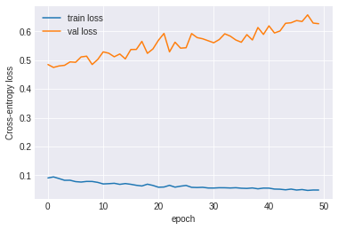
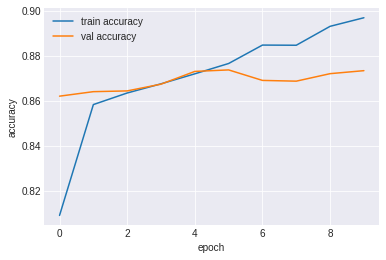

Universal Sentence Embeddings¶
Loading Libaries¶
import tensorflow as tf
import tensorflow_hub as hub
import numpy as np
import pandas as pd
## Check GPU if any
# tf.test.is_gpu_available()
tf.test.gpu_device_name()
tf.config.list_physical_devices('GPU')
[PhysicalDevice(name='/physical_device:GPU:0', device_type='GPU')]
Data¶
The original IMDB Large Movie Review Dataset
The original data include each text as an independent text file
Sarkar’s repository for csv file
# import tarfile
# tar = tarfile.open("../data/movie_review.tar.gz")
# tar.extractall(path="../data/stanford-movie-review/")
# tar.close()
# import os
# import tarfile
# def csv_files(members):
# for tarinfo in members:
# if os.path.splitext(tarinfo.name)[1] == ".csv":
# yield tarinfo
# tar = tarfile.open("../data/movie_review.tar.gz")
# tar.extractall(path='../data/', members=csv_files(tar))
# tar.close()
from google.colab import drive
drive.mount('/content/gdrive')
Drive already mounted at /content/gdrive; to attempt to forcibly remount, call drive.mount("/content/gdrive", force_remount=True).
dataset = pd.read_csv('/content/gdrive/My Drive/Colab Notebooks/movie_reviews.csv.bz2',
compression='bz2')
dataset.info()
<class 'pandas.core.frame.DataFrame'>
RangeIndex: 50000 entries, 0 to 49999
Data columns (total 2 columns):
# Column Non-Null Count Dtype
--- ------ -------------- -----
0 review 50000 non-null object
1 sentiment 50000 non-null object
dtypes: object(2)
memory usage: 781.4+ KB
dataset.dtypes
review object
sentiment object
dtype: object
## Recode sentiment
dataset['sentiment'] = [1 if sentiment=='positive' else 0 for sentiment in dataset['sentiment'].values]
dataset.head()
| review | sentiment | |
|---|---|---|
| 0 | One of the other reviewers has mentioned that ... | 1 |
| 1 | A wonderful little production. <br /><br />The... | 1 |
| 2 | I thought this was a wonderful way to spend ti... | 1 |
| 3 | Basically there's a family where a little boy ... | 0 |
| 4 | Petter Mattei's "Love in the Time of Money" is... | 1 |
dataset.dtypes
review object
sentiment int64
dtype: object
Train, Validation, and Test Sets Splitting¶
## Method 1 sklearn
# from sklearn.model_selection import train_test_split
# train, test = train_test_split(reviews, test_size = 0.33, random_state=42)
## Method 2 numpy
train, validate, test = np.split(dataset.sample(frac=1), [int(.6*len(dataset)), int(.7*len(dataset))])
train.shape, validate.shape, test.shape
train.head()
| review | sentiment | |
|---|---|---|
| 30463 | A have a female friend who is currently being ... | 1 |
| 3960 | If there's one theme of this film, it's that p... | 1 |
| 36812 | Ninja Hunter (AKA Wu Tang vs Ninja) is pure en... | 1 |
| 47930 | I can say without a shadow of a doubt that Goi... | 0 |
| 11350 | Just once I'd like to see a version of Beowulf... | 0 |
Text Wranlging¶
Text preprocessing usually takes care of:
unnecessary html tags
non-ASCII characters in English texts (e.g., accented characters)
contraction issues
special characters (unicode)
## libaries for text pre-processing
!pip3 install contractions
import contractions
from bs4 import BeautifulSoup
import unicodedata
import re
Requirement already satisfied: contractions in /usr/local/lib/python3.6/dist-packages (0.0.25)
Requirement already satisfied: textsearch in /usr/local/lib/python3.6/dist-packages (from contractions) (0.0.17)
Requirement already satisfied: pyahocorasick in /usr/local/lib/python3.6/dist-packages (from textsearch->contractions) (1.4.0)
Requirement already satisfied: Unidecode in /usr/local/lib/python3.6/dist-packages (from textsearch->contractions) (1.1.1)
## Functions for Text Preprocessing
def strip_html_tags(text):
soup = BeautifulSoup(text, 'html.parser')
[s.extract() for s in soup(['iframe','script'])]
stripped_text = soup.get_text()
stripped_text = re.sub(r'[\r|\n|\r\n]+', '\n', stripped_text)
return stripped_text
def remove_accented_chars(text):
text = unicodedata.normalize('NFKD', text).encode('ascii', 'ignore'). decode('utf-8', 'ignore')
return text
def expand_contractions(text):
return contractions.fix(text)
def remove_special_characters(text, remove_digits=False):
pattern = r'[^a-zA-Z0-9\s]' if not remove_digits else r'[^a-zA-Z\s]'
text = re.sub(pattern, '', text)
return text
def pre_process_document(document):
# strip HTML
document = strip_html_tags(document)
# case normalization
document = document.lower()
# remove empty lines
document = document.translate(document.maketrans("\n\t\r", " "))
# remove accented characters
document = remove_accented_chars(document)
# expand contractions
document = expand_contractions(document)
# remove special characters and\or digits
# insert spaces between special characters to isolate them
special_char_pattern = re.compile(r'([{.(-)!}])')
document = special_char_pattern.sub(" \\1 ", document)
document = remove_special_characters(document, remove_digits=True)
# remove extra whitespace
document = re.sub(' +', ' ', document)
document = document.strip()
return document
# vectorize function
pre_process_corpus = np.vectorize(pre_process_document)
pre_process_corpus(train['review'].values[0])
array('a have a female friend who is currently being drawn into a relationship with an sob who has a long term girlfriend of course the sob is very goodlooking charming etc and my friend is a very intelligent woman watching jean pierre leauds character at work is exactly like watching what goes on in real life when guys like that destroy the lives of our female friends it is tragic and you know she is going to end up very hurt but there is nothing you can do leaud is brilliant totally empty a blank throughout he pulls the faces and tells the stories he thinks will get the reaction he wants the scene two hours in when leaud and lebrun have made love and the next morning he puts on a record and very sweetly and charmingly sings along to amuse her is brilliant the what the hell am i doing here with this idiot expression that flickers back and forth across her face will be in my memory for a long time to come it is a long film but see it in one go preferably in a cinema takes a while to get into but then the time just disappears',
dtype='<U1033')
%%time
train_reviews = pre_process_corpus(train['review'].values)
train_sentiments = train['sentiment'].values
val_reviews = pre_process_corpus(validate['review'].values)
val_sentiments = validate['sentiment'].values
test_reviews = pre_process_corpus(test['review'].values)
test_sentiments = test['sentiment'].values
CPU times: user 25.6 s, sys: 1.1 s, total: 26.7 s
Wall time: 26.7 s
# train_text = train_reviews.tolist()
train_text = np.array(train_reviews, dtype=object)[:, np.newaxis]
test_text = np.array(test_reviews, dtype=object)[:, np.newaxis]
val_text = np.array(val_reviews, dtype=object)[:, np.newaxis]
train_label = np.asarray(pd.get_dummies(train_sentiments), dtype = np.int8)
test_label = np.asarray(pd.get_dummies(test_sentiments), dtype = np.int8)
val_label = np.asarray(pd.get_dummies(val_sentiments), dtype = np.int8)
print(train_text[1])
print(train_label[1]) # y is one-hot encoding
['if there is one theme of this film it is that people can cope with hardship by having a good imagination this family is poor their father works graveyard and their mother works doubleshifts and peter is constantly picked on for a variety of reasons and becomes increasingly frustrated that he is often mistaken for a girl he is just starting to approach that age of or where your perceptions start to change and thinks like your appearance start to matter the backdrop of this story is the worlds fair and the centennial of canada the films greatest moments come during the various fantasy sequences where we see just how they cope watch the flim and if you have ever had a childhood friend that you dreamt with and then for some reason lost you will really like this film perhaps kids will like this film but only adults will truly appreciate it including its references to bolsheviks and what parents will do for their children']
[0 1]
import tensorflow_hub as hub
embed = hub.load("https://tfhub.dev/google/universal-sentence-encoder/4")
embeddings = embed([
"The quick brown fox jumps over the lazy dog.",
"I am a sentence for which I would like to get its embedding"])
print(len(embeddings[0]))
print(embed(train_text[1])) # train_text[0] sentence embeddings
from tqdm import tqdm
## Converting train_text into embedding
X_train = []
for r in tqdm(train_text):
emb = embed(r)
review_emb = tf.reshape(emb, [-1]).numpy()
X_train.append(review_emb)
X_train = np.array(X_train)
100%|██████████| 30000/30000 [03:24<00:00, 146.63it/s]
## Converting test_text into embeddings
X_test = []
for r in tqdm(test_text):
emb = embed(r)
review_emb = tf.reshape(emb, [-1]).numpy()
X_test.append(review_emb)
X_test = np.array(X_test)
100%|██████████| 15000/15000 [01:43<00:00, 145.51it/s]
## Converting val_text into embeddings
X_val = []
for r in tqdm(val_text):
emb = embed(r)
review_emb = tf.reshape(emb, [-1]).numpy()
X_val.append(review_emb)
X_val = np.array(X_val)
100%|██████████| 5000/5000 [00:34<00:00, 146.26it/s]
import keras
model = keras.Sequential()
model.add(
keras.layers.Dense(
units=256,
input_shape=(X_train.shape[1], ),
activation='relu'
)
)
model.add(
keras.layers.Dropout(rate=0.5)
)
model.add(
keras.layers.Dense(
units=128,
activation='relu'
)
)
model.add(
keras.layers.Dropout(rate=0.5)
)
model.add(keras.layers.Dense(2, activation='softmax'))
model.compile(
loss='categorical_crossentropy',
optimizer=keras.optimizers.Adam(0.001),
metrics=['accuracy']
)
history = model.fit(
X_train, train_label,
epochs=50,
batch_size=128,
validation_split=0.1,
verbose=1,
shuffle=True
)
Epoch 1/50
211/211 [==============================] - 1s 3ms/step - loss: 0.0907 - accuracy: 0.9649 - val_loss: 0.4847 - val_accuracy: 0.8663
Epoch 2/50
211/211 [==============================] - 1s 3ms/step - loss: 0.0943 - accuracy: 0.9635 - val_loss: 0.4747 - val_accuracy: 0.8693
Epoch 3/50
211/211 [==============================] - 1s 3ms/step - loss: 0.0887 - accuracy: 0.9663 - val_loss: 0.4798 - val_accuracy: 0.8653
Epoch 4/50
211/211 [==============================] - 1s 3ms/step - loss: 0.0826 - accuracy: 0.9689 - val_loss: 0.4820 - val_accuracy: 0.8640
Epoch 5/50
211/211 [==============================] - 1s 3ms/step - loss: 0.0828 - accuracy: 0.9681 - val_loss: 0.4939 - val_accuracy: 0.8663
Epoch 6/50
211/211 [==============================] - 1s 3ms/step - loss: 0.0780 - accuracy: 0.9704 - val_loss: 0.4925 - val_accuracy: 0.8637
Epoch 7/50
211/211 [==============================] - 1s 3ms/step - loss: 0.0765 - accuracy: 0.9714 - val_loss: 0.5111 - val_accuracy: 0.8687
Epoch 8/50
211/211 [==============================] - 1s 3ms/step - loss: 0.0787 - accuracy: 0.9699 - val_loss: 0.5137 - val_accuracy: 0.8670
Epoch 9/50
211/211 [==============================] - 1s 3ms/step - loss: 0.0785 - accuracy: 0.9707 - val_loss: 0.4848 - val_accuracy: 0.8677
Epoch 10/50
211/211 [==============================] - 1s 3ms/step - loss: 0.0754 - accuracy: 0.9716 - val_loss: 0.5021 - val_accuracy: 0.8697
Epoch 11/50
211/211 [==============================] - 1s 3ms/step - loss: 0.0699 - accuracy: 0.9734 - val_loss: 0.5287 - val_accuracy: 0.8670
Epoch 12/50
211/211 [==============================] - 1s 3ms/step - loss: 0.0708 - accuracy: 0.9730 - val_loss: 0.5241 - val_accuracy: 0.8630
Epoch 13/50
211/211 [==============================] - 1s 3ms/step - loss: 0.0722 - accuracy: 0.9730 - val_loss: 0.5117 - val_accuracy: 0.8693
Epoch 14/50
211/211 [==============================] - 1s 3ms/step - loss: 0.0685 - accuracy: 0.9754 - val_loss: 0.5213 - val_accuracy: 0.8663
Epoch 15/50
211/211 [==============================] - 1s 3ms/step - loss: 0.0712 - accuracy: 0.9736 - val_loss: 0.5044 - val_accuracy: 0.8617
Epoch 16/50
211/211 [==============================] - 1s 3ms/step - loss: 0.0687 - accuracy: 0.9743 - val_loss: 0.5369 - val_accuracy: 0.8683
Epoch 17/50
211/211 [==============================] - 1s 4ms/step - loss: 0.0652 - accuracy: 0.9758 - val_loss: 0.5372 - val_accuracy: 0.8687
Epoch 18/50
211/211 [==============================] - 1s 4ms/step - loss: 0.0629 - accuracy: 0.9758 - val_loss: 0.5652 - val_accuracy: 0.8683
Epoch 19/50
211/211 [==============================] - 1s 4ms/step - loss: 0.0690 - accuracy: 0.9737 - val_loss: 0.5236 - val_accuracy: 0.8653
Epoch 20/50
211/211 [==============================] - 1s 4ms/step - loss: 0.0647 - accuracy: 0.9756 - val_loss: 0.5389 - val_accuracy: 0.8620
Epoch 21/50
211/211 [==============================] - 1s 4ms/step - loss: 0.0585 - accuracy: 0.9779 - val_loss: 0.5691 - val_accuracy: 0.8690
Epoch 22/50
211/211 [==============================] - 1s 4ms/step - loss: 0.0592 - accuracy: 0.9777 - val_loss: 0.5927 - val_accuracy: 0.8623
Epoch 23/50
211/211 [==============================] - 1s 4ms/step - loss: 0.0651 - accuracy: 0.9757 - val_loss: 0.5288 - val_accuracy: 0.8670
Epoch 24/50
211/211 [==============================] - 1s 4ms/step - loss: 0.0588 - accuracy: 0.9781 - val_loss: 0.5623 - val_accuracy: 0.8663
Epoch 25/50
211/211 [==============================] - 1s 4ms/step - loss: 0.0622 - accuracy: 0.9766 - val_loss: 0.5416 - val_accuracy: 0.8677
Epoch 26/50
211/211 [==============================] - 1s 4ms/step - loss: 0.0646 - accuracy: 0.9747 - val_loss: 0.5431 - val_accuracy: 0.8647
Epoch 27/50
211/211 [==============================] - 1s 4ms/step - loss: 0.0581 - accuracy: 0.9787 - val_loss: 0.5923 - val_accuracy: 0.8640
Epoch 28/50
211/211 [==============================] - 1s 4ms/step - loss: 0.0575 - accuracy: 0.9786 - val_loss: 0.5783 - val_accuracy: 0.8743
Epoch 29/50
211/211 [==============================] - 1s 4ms/step - loss: 0.0583 - accuracy: 0.9783 - val_loss: 0.5742 - val_accuracy: 0.8703
Epoch 30/50
211/211 [==============================] - 1s 3ms/step - loss: 0.0558 - accuracy: 0.9800 - val_loss: 0.5673 - val_accuracy: 0.8703
Epoch 31/50
211/211 [==============================] - 1s 3ms/step - loss: 0.0557 - accuracy: 0.9790 - val_loss: 0.5604 - val_accuracy: 0.8683
Epoch 32/50
211/211 [==============================] - 1s 3ms/step - loss: 0.0567 - accuracy: 0.9781 - val_loss: 0.5714 - val_accuracy: 0.8700
Epoch 33/50
211/211 [==============================] - 1s 3ms/step - loss: 0.0566 - accuracy: 0.9787 - val_loss: 0.5915 - val_accuracy: 0.8693
Epoch 34/50
211/211 [==============================] - 1s 3ms/step - loss: 0.0558 - accuracy: 0.9791 - val_loss: 0.5833 - val_accuracy: 0.8647
Epoch 35/50
211/211 [==============================] - 1s 3ms/step - loss: 0.0568 - accuracy: 0.9790 - val_loss: 0.5700 - val_accuracy: 0.8690
Epoch 36/50
211/211 [==============================] - 1s 3ms/step - loss: 0.0550 - accuracy: 0.9795 - val_loss: 0.5621 - val_accuracy: 0.8707
Epoch 37/50
211/211 [==============================] - 1s 3ms/step - loss: 0.0544 - accuracy: 0.9794 - val_loss: 0.5886 - val_accuracy: 0.8663
Epoch 38/50
211/211 [==============================] - 1s 3ms/step - loss: 0.0560 - accuracy: 0.9790 - val_loss: 0.5700 - val_accuracy: 0.8700
Epoch 39/50
211/211 [==============================] - 1s 3ms/step - loss: 0.0530 - accuracy: 0.9796 - val_loss: 0.6133 - val_accuracy: 0.8670
Epoch 40/50
211/211 [==============================] - 1s 3ms/step - loss: 0.0555 - accuracy: 0.9795 - val_loss: 0.5893 - val_accuracy: 0.8660
Epoch 41/50
211/211 [==============================] - 1s 3ms/step - loss: 0.0553 - accuracy: 0.9790 - val_loss: 0.6191 - val_accuracy: 0.8657
Epoch 42/50
211/211 [==============================] - 1s 3ms/step - loss: 0.0521 - accuracy: 0.9805 - val_loss: 0.5944 - val_accuracy: 0.8690
Epoch 43/50
211/211 [==============================] - 1s 3ms/step - loss: 0.0516 - accuracy: 0.9808 - val_loss: 0.6012 - val_accuracy: 0.8687
Epoch 44/50
211/211 [==============================] - 1s 3ms/step - loss: 0.0495 - accuracy: 0.9818 - val_loss: 0.6279 - val_accuracy: 0.8720
Epoch 45/50
211/211 [==============================] - 1s 3ms/step - loss: 0.0520 - accuracy: 0.9810 - val_loss: 0.6298 - val_accuracy: 0.8690
Epoch 46/50
211/211 [==============================] - 1s 3ms/step - loss: 0.0487 - accuracy: 0.9816 - val_loss: 0.6375 - val_accuracy: 0.8703
Epoch 47/50
211/211 [==============================] - 1s 3ms/step - loss: 0.0505 - accuracy: 0.9806 - val_loss: 0.6342 - val_accuracy: 0.8720
Epoch 48/50
211/211 [==============================] - 1s 3ms/step - loss: 0.0474 - accuracy: 0.9822 - val_loss: 0.6572 - val_accuracy: 0.8620
Epoch 49/50
211/211 [==============================] - 1s 3ms/step - loss: 0.0488 - accuracy: 0.9819 - val_loss: 0.6287 - val_accuracy: 0.8690
Epoch 50/50
211/211 [==============================] - 1s 3ms/step - loss: 0.0487 - accuracy: 0.9816 - val_loss: 0.6265 - val_accuracy: 0.8687
## plotting
import pandas as pd
history.history
history_df = pd.DataFrame(list(zip(history.history['loss'],history.history['accuracy'], history.history['val_loss'], history.history['val_accuracy'])),
columns=['loss','accuracy','val_loss','val_accurary'])
history_df['epoch']=list(range(1,len(history_df['loss'])+1,1))
history_df
| loss | accuracy | val_loss | val_accurary | epoch | |
|---|---|---|---|---|---|
| 0 | 0.419730 | 0.809000 | 0.322251 | 0.862000 | 1 |
| 1 | 0.330260 | 0.858259 | 0.312898 | 0.864000 | 2 |
| 2 | 0.320665 | 0.863407 | 0.308870 | 0.864333 | 3 |
| 3 | 0.310101 | 0.867481 | 0.303316 | 0.867333 | 4 |
| 4 | 0.304804 | 0.871926 | 0.302841 | 0.873000 | 5 |
| 5 | 0.292450 | 0.876519 | 0.296977 | 0.873667 | 6 |
| 6 | 0.283341 | 0.884704 | 0.297412 | 0.869000 | 7 |
| 7 | 0.275332 | 0.884630 | 0.299703 | 0.868667 | 8 |
| 8 | 0.265320 | 0.893037 | 0.299673 | 0.872000 | 9 |
| 9 | 0.255613 | 0.896852 | 0.300012 | 0.873333 | 10 |
import matplotlib.pyplot as plt
import numpy as np
import pandas as pd
plt.plot(history.history['loss'], label='train loss')
plt.plot(history.history['val_loss'], label='val loss')
plt.xlabel("epoch")
plt.ylabel("Cross-entropy loss")
plt.legend();
# # style
# plt.style.use('seaborn-darkgrid')
# # create a color palette
# palette = plt.get_cmap('Set1')
# # multiple line plot
# num=0
# for column in history_df.drop(['epoch','loss','val_loss'], axis=1):
# num+=1
# plt.plot(history_df['epoch'], history_df[column], marker='', color=palette(num), linewidth=1, alpha=0.9, label=column)
# # Add legend
# plt.legend(loc=2, ncol=2)
# # Add titles
# plt.title("A (bad) Spaghetti plot", loc='left', fontsize=12, fontweight=0, color='orange')
# plt.xlabel("Time")
# plt.ylabel("Score")

plt.plot(history.history['accuracy'], label='train accuracy')
plt.plot(history.history['val_accuracy'], label='val accuracy')
plt.xlabel("epoch")
plt.ylabel("accuracy")
plt.legend();

model.evaluate(X_test, test_label)
469/469 [==============================] - 1s 2ms/step - loss: 0.6929 - accuracy: 0.8607
[0.6929293870925903, 0.8606666922569275]
y_pred = model.predict(X_test)
#y_pred = np.argmax(y_pred, axis = 1)[:5]
label = np.argmax(test_label,axis = 1)[:5]
print(y_pred[:5])
print(label[:5])
[[1.4283112e-01 8.5716891e-01]
[5.6122297e-01 4.3877703e-01]
[1.6821243e-01 8.3178753e-01]
[1.0710892e-07 9.9999988e-01]
[6.6318661e-01 3.3681333e-01]]
[1 1 0 1 0]
y_pred = model.predict(X_test[:1])
print(y_pred)
"Bad" if np.argmax(y_pred) == 0 else "Good"
[[0.1428309 0.8571691]]
'Good'
print(test_text[1])
['i love the series many of the stereotypes portraying southerrners as hicks are very apparent but such people do exist all too frequently the portrayal of southern government rings all too true as well but the sympathetic characters reminds one of the many good things about the south as well some things never change and we see the good old boys every day there is a lucas buck in every southern town who has only to make a phone call to make things happen and the storybook po white trash are all too familiar aside from the supernatural elements everything else could very well happen in the modern south i somehow think trinity sc must have been in barnwell county']
# functions from Text Analytics with Python book
def get_metrics(true_labels, predicted_labels):
print('Accuracy:', np.round(
metrics.accuracy_score(true_labels,
predicted_labels),
4))
print('Precision:', np.round(
metrics.precision_score(true_labels,
predicted_labels,
average='weighted'),
4))
print('Recall:', np.round(
metrics.recall_score(true_labels,
predicted_labels,
average='weighted'),
4))
print('F1 Score:', np.round(
metrics.f1_score(true_labels,
predicted_labels,
average='weighted'),
4))
def display_confusion_matrix(true_labels, predicted_labels, classes=[1,0]):
total_classes = len(classes)
level_labels = [total_classes*[0], list(range(total_classes))]
cm = metrics.confusion_matrix(y_true=true_labels, y_pred=predicted_labels,
labels=classes)
cm_frame = pd.DataFrame(data=cm,
columns=pd.MultiIndex(levels=[['Predicted:'], classes],
codes=level_labels),
index=pd.MultiIndex(levels=[['Actual:'], classes],
codes=level_labels))
print(cm_frame)
def display_classification_report(true_labels, predicted_labels, classes=[1,0]):
report = metrics.classification_report(y_true=true_labels,
y_pred=predicted_labels,
labels=classes)
print(report)
def display_model_performance_metrics(true_labels, predicted_labels, classes=[1,0]):
print('Model Performance metrics:')
print('-'*30)
get_metrics(true_labels=true_labels, predicted_labels=predicted_labels)
print('\nModel Classification report:')
print('-'*30)
display_classification_report(true_labels=true_labels, predicted_labels=predicted_labels,
classes=classes)
print('\nPrediction Confusion Matrix:')
print('-'*30)
display_confusion_matrix(true_labels=true_labels, predicted_labels=predicted_labels,
classes=classes)
from sklearn import metrics
test_pred = model.predict(X_test)
test_pred = np.argmax(test_pred, axis=1)
print(test_pred)
print(test_sentiments)
display_model_performance_metrics(test_sentiments, test_pred)
[1 1 1 ... 1 0 1]
[1 1 0 ... 1 0 1]
Model Performance metrics:
------------------------------
Accuracy: 0.8607
Precision: 0.8607
Recall: 0.8607
F1 Score: 0.8607
Model Classification report:
------------------------------
precision recall f1-score support
1 0.86 0.87 0.86 7538
0 0.86 0.85 0.86 7462
accuracy 0.86 15000
macro avg 0.86 0.86 0.86 15000
weighted avg 0.86 0.86 0.86 15000
Prediction Confusion Matrix:
------------------------------
Predicted:
1 0
Actual: 1 6539 999
0 1091 6371